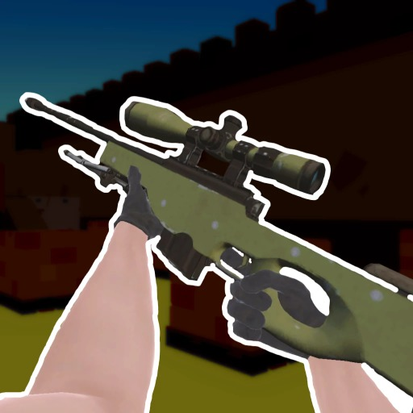
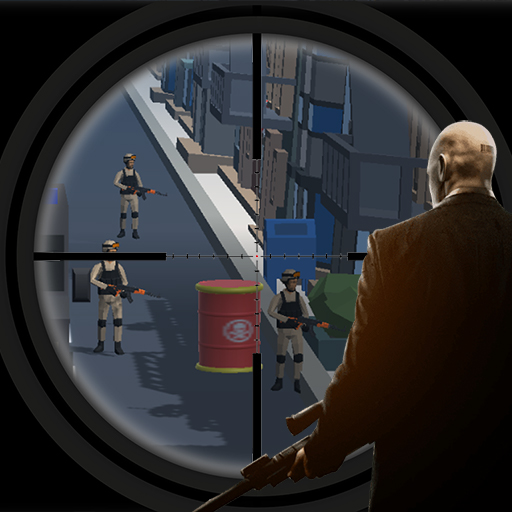
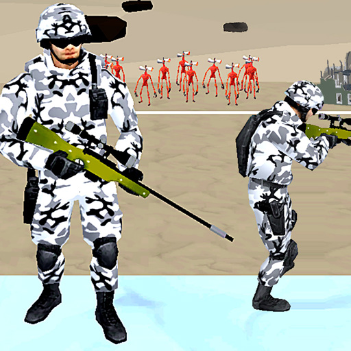

City Siege Sniper
City Siege Sniper
More Open Front Games








About City Siege Sniper
Take on the role of a lone sniper in the City Siege universe and save SNAFU Island from the Baddies. - Throw stones to distract the Baddies and allow the Civilians to escape before going to town with your heavy weapons for some massive combos - Take Cover to avoid enemy fire - Purchase and upgrade 9 different weapons, ranging from Sniper Rifles and Machine Guns to Rocket Launchers, Cluster Bombs and Molotovs - Call in Air Strikes and Nepalm Strikes - 25 levels set on various parts of SNAFU Island, beaches, jungles, volcanos, favela etc. - Take all your weapons in to each level, you decide how to take out the Baddies - Maximum Destruction, as you would expect from a City Siege game City Siege Sniper takes City Siege and combines it with Sieger, a bit of Ghost Recon Future Soldier and throws in a few puzzle elements as well.